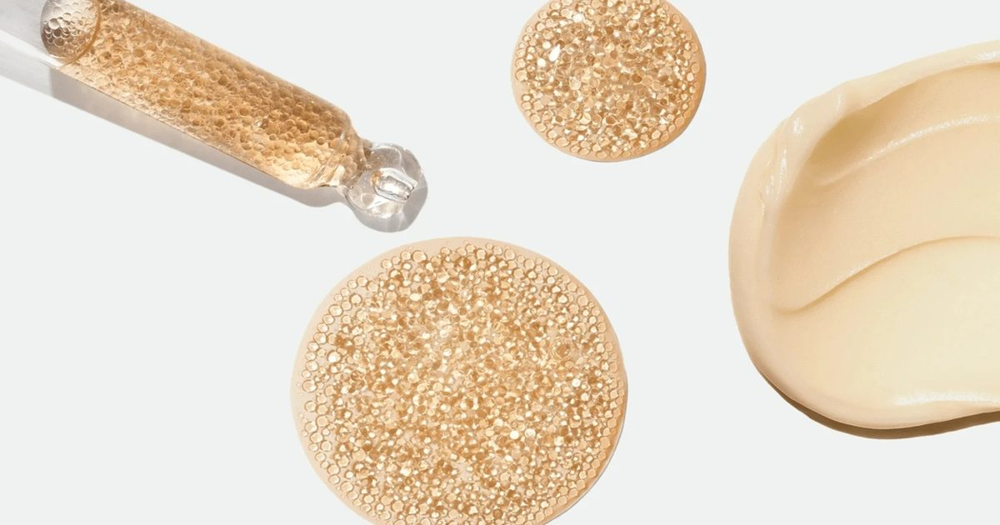

Motion Equity Partners берет на себя Capsum, специалиста по микрофлюидике
Chanel нашла покупателя для Capsum, в котором она владела контрольным пакетом акций с 2010-х годов.
Во вторник, 20 октября, инвестиционный фонд Motion Equity Partners официально объявил о приобретении контрольного пакета акций компании, которая специализируется на разработке высококачественных средств по уходу за кожей, макияжа и ароматов.
Себастьян Бардон, основатель и генеральный директор Capsum, и его управленческая команда также реинвестируют в компанию.
Chanel останется миноритарной долей